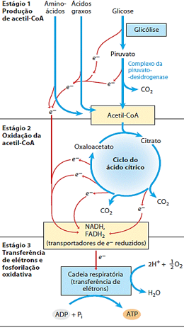

<ion-header>
    <ion-navbar color="primary">
      <ion-buttons left>
        <button ion-button icon-only menuToggle>
          <ion-icon name="menu"></ion-icon>
        </button>
      </ion-buttons>
      <ion-title>VISÃO GERAL DA RESPIRAÇÃO <br> AERÓBIA</ion-title>
    </ion-navbar>
  </ion-header>


<ion-content padding>
  <h5>Visão geral das três etapas da respiração celular</h5>
  <br>
  

</ion-content>
